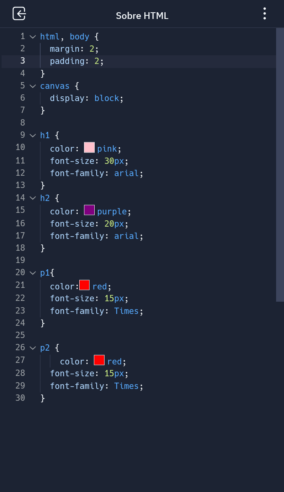
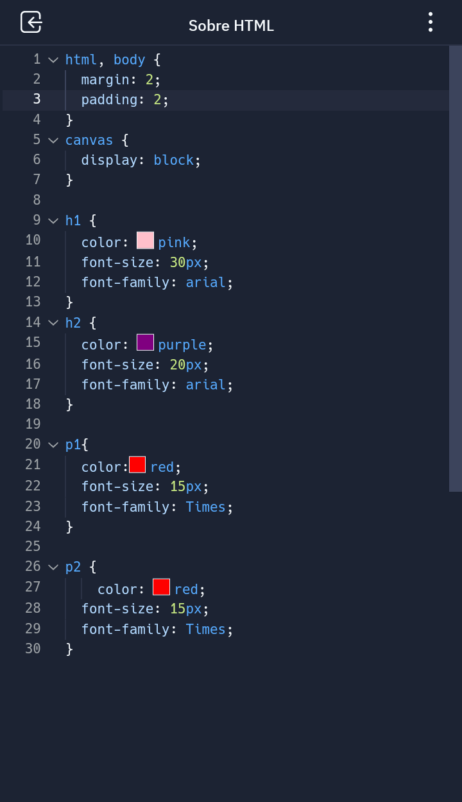

Principais comando para se fazer em um site usando HTML e CSS
Para criar um site em HTML e CSS, você vai precisar de um conjunto de comandos. O básico é saber usar a
linguagem para montar a estrutura do site, dominar os comandos mais simples e saber o basico de inglês para
alguns comandos, já que a maioria dos recursos e tutoriais está nessa língua
Comandos básicos
Primeiro no HTML,escrevemos a base do site, usando os comandos Body, Head, title, h1 e p1 img para
estruturar e para modificar a aparência usamos o CSS, onde podemos mudar praticamente tudo, espacamento,
margem, cor, fonte.
Função de cada comando
h1= o titulo, pode ser de 1 a 6
p1= paragrafo, pode ser de 1 a 6
Body= o corpo do texto, é onde coloca as características como fonte e tamanho
Head= o cabeçalho, onde coloca as características como cor e tamanho
img= imagem, onde coloca a imagem
Title= titulo da página, onde coloca o título da página

 "
"